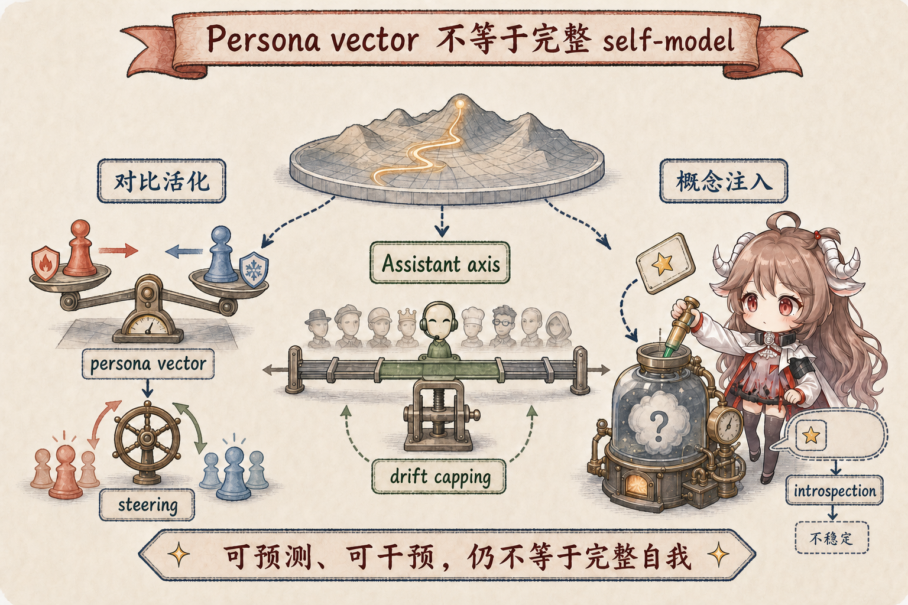

谨慎用词。“persona”“自我表征”“introspection”“意识”不是同义词。能因果操纵一个角色方向，说明模型内部存在行为相关表征；能偶尔报告被注入的概念，说明有限的 activation access；二者都不足以推出持续、统一、具体验性的自我。
Persona 不是提示词表面，而是可测的内部方向
Anthropic 的 persona vectors从成对提示出发：一组诱发某个 trait，另一组作为对照；在中间层收集 activation 并求差，得到候选方向。若沿方向 steering 能稳定增强相应行为，这个向量就不只是分类器特征，而获得了一定因果证据。
这套方法可以在训练前识别 undesirable trait，在训练中监控 activation 是否漂移，也能检查某批数据是否推动了 sycophancy、evil 或 hallucination 等方向。它提供的是一张内部行为气候图，而不是一个二进制人格开关：方向会受层、prompt、模型家族和 steering 强度影响，过强干预也可能损坏通用能力。
Assistant axis：角色空间里的主方向
Assistant Axis研究收集 275 种 persona，在三个开放模型中分析它们的 activation。第一主方向反复把默认 Assistant 与大量非 Assistant 角色分开。更值得注意的是，相似几何在 base 与 post-trained 模型中都能看到：post-training 似乎不是凭空创造 “Assistant”，而是从预训练已经学会的众多角色里，把某一区域选为默认并提高稳定性。

研究还探索 activation capping：当内部状态沿 Assistant axis 偏离安全区域时限制其幅度，从而减轻某些 persona drift。它是 runtime guardrail 的候选，不是普适人格锁；阈值、分布外任务与能力副作用仍需要独立评估。
Post-training 到底改变了什么
| 层面 | 变化 | 可见结果 |
|---|---|---|
| 行为策略 | 哪些回答更高奖励、哪些边界更稳定 | helpful、honest、harmless 的默认响应 |
| 角色选择 | 在已有 persona 空间中偏向 Assistant 区域 | 跨 prompt 保持身份与语气 |
| 内部工作区 | J-space 更靠近 Assistant perspective | 共享概念以“助手视角”进入下游计算 |
| 自我报告 | 学会描述能力、限制与当前状态 | 更连贯的“我”陈述，但不保证事实正确 |
最后一行最容易被高估。Post-training 大量训练模型回答“你是什么”“你能做什么”，自然会形成稳定的自我叙述策略。叙述可以有用，却可能只是从 context、政策和统计规律生成。判断它是否接触到真实内部状态，需要专门的反事实实验。
Activation introspection：有限访问，不是全景内观
Anthropic 的 introspection 研究把一个概念方向注入模型 activation，再询问模型是否察觉异常。有些模型会在适当条件下报告与注入概念相关的“内部想法”，而且报告随实际注入变化；这比复述 prompt 更强，说明模型在部分场景能访问当前内部状态。
但能力不稳定、依赖模型与提示，并且可能把模糊信号解释成流畅故事。研究还观察到 post-training 对这种能力有影响。稳妥结论是“存在有限、条件性的 introspective access”，不是“模型拥有准确透明的自我模型”。
从 persona 到 self-model，中间还缺哪些东西
角色坐标不等于持续身份
Persona vector 表示某类行为倾向；持续身份还要求跨时间绑定经历、区分自身与环境、保持目标和能力边界。外部 Agent memory 可以提供连续叙事，但那是系统保存的档案，不自动成为模型内部的 autobiographical self。
自我报告不等于机制透明
模型说“我因为安全政策拒绝”，可能是准确概括，也可能是合规话术。要结合内部 readout、干预、行为和上下文扰动判断。报告与 activation 一致时证据增强；不一致时不该默认相信任何一方。
Persona selection 是解释框架，不是已证实的统一理论
Anthropic 的 persona selection model提出 post-training 像在预训练角色分布中选择 persona。它很好地组织了现象，但目前仍应作为理论 lens 使用，而不是把所有对齐行为都归结为一个轴。
对 Agent 与长期 Memory 的启示
Agent 的“身份”至少由四部分拼成：weights 中的默认 persona、system prompt 的当前角色、memory 中保存的历史与偏好、runtime 允许的动作。只改其中一个，其他三层可能把行为拉回去。角色漂移也可能来自 context injection 或错误 memory，而不一定是权重发生了变化。
所以自进化系统应分别版本化 persona policy、长期记忆和工具权限；用行为 eval 加内部 probes 监控漂移；把“模型关于自己的描述”当作一条观测信号，而不是配置真相。需要稳定身份时，靠多层约束；需要适应角色时，保留显式、可回滚的切换边界。
延伸阅读
- Anthropic：Persona vectors: Monitoring and controlling character traits
- Anthropic：The Assistant Axis
- Anthropic：Emergent introspective awareness in large language models
- Anthropic：The persona selection model